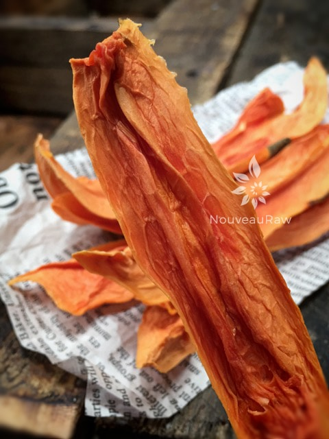

Dehydrated Papaya Spears

~ raw, dehydrated ~
Do you enjoy… Banane de Prairie, Caricae Papayae Folium, Carica papaya, Carica peltata, Carica posoposa, Chirbhita, Erandachirbhita, Erand Karkati, Green Papaya, Mamaerie, Melonenbaumblaetter, Melon Tree, Papaw, Papayas, Papaye, Papaye Verte, Papayer, Papita?
If you said yes to any of these, you like papaya. :) The other day while I was hanging out in the produce department, I spied a HUGE papaya and it lured me in. The produce man was standing nearby and saw my excitement as I fondled held it.
He walked over to me and asked if I had ever had a papaya. I smiled and told him that I loved them. He pointed to the one that I was cuddling and claimed that it was a good one. He said that when they look ready for the trash, they are perfectly ripe. I extended my hands, cradling it in my palms… “Ready for the trash?” It’s mine!
I was never fond of papaya growing up. This is another one of those foods that shifted for me when I started a high raw diet. My taste buds really really got confused. I was feeding them foods that they once wanted to spit out, and now they were enjoying.
For those of you who don’t care for papaya, I ask you to make sure that you give it a fair chance by eating a very ripe one. This is one of those fruits that I can’t tolerate unripe.
When selecting you usually find them slightly green, however, they will ripen quickly at room temperature, especially if placed in a paper bag. Ripening turns them from green to yellow. Once ripe, place in a plastic bag and store in the refrigerator. Papayas will keep for up to a week, but it’s best to use them within a day or two.

The most common papayas found in the store are Hawaiian and Mexican. These particular ones are pear-shaped and weigh about a pound each. They will have a yellow skin when ripe.
The flesh is bright orange or pinkish, depending on the variety. The Mexican variety is not as common but can be found in Latino supermarkets. They are much larger then the Hawaiian types and can weigh up to 20 pounds and be more than 15 inches long.
Although the flavor is less intense than the Hawaiian varieties, they are still delicious and enjoyable. Personally, I haven’t had the pleasure to experience a 20 lb papaya, but ooooh boy, I would love to get my paws on one of those. :)
This post really isn’t a “recipe”. It’s more about inspiring you to try papaya and to have another way to preserve it for future enjoyment.
Ingredients:
Preparation:
- Cut the papaya in half.
- Scrape out the black seeds. Save for other recipes. Their taste is compared to pepper, mustard, watercress, horseradish or wasabi. You can dehydrate them at the same time as the flesh. Once dried grind and use as a fresh “pepper”.
- Make long 1″ slices. Run the knife between the skin and flesh of the papaya. Discard the skin.
- Place the strips on the mesh sheet that come with the dehydrator.
- Dry at 115 degrees for 6-8 hours or until dry. The dry time will vary depending on the machine you are using, the climate you live in, humidity and how full the dehydrator is.
- Store in an airtight container for 3-12 months.
© AmieSue.com